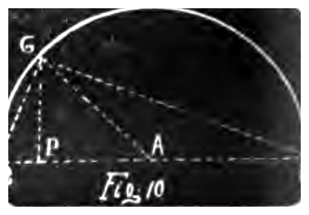
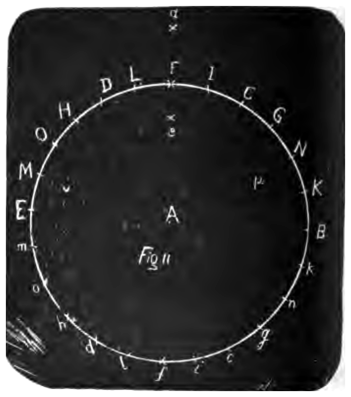

§§ 36–39: Lemmi sulle corde e divisione in 48 parti¶
f. 0050 · p. 2136. Lemma. Se nel cerchio \(BGE\) sia il raggio \(AB = 1\); sia
f. 0051 · p. 22poi l’arco \(BG\) un’ottava parte della circonferenza; sarà il quadrato della sua corda \(BG\), ossia \((BG)^2 = 2 - \sqrt{2}\) (fig. 10).


Dim. Sul diametro \(BE\) si cali la perpendicolare \(GP\). Nel triangolo rettangolo \(GPA\) a cagione dell’angolo semiretto \(GAP\) sarà semiretto ancora \(AGP\) (32, lib. I). Saranno dunque eguali i lati \(GP, PA\) (6, lib. I). È poi \((AG)^2 = (PG)^2 + (AP)^2\) (47, lib. I). Dunque \((AG)^2 = 2(AP)^2\); quindi \(2(AG)^2 = 4(AP)^2\), ossia \(2 = (2AP)^2\), e quindi \(\sqrt{2} = 2AP\); \(AP = \frac{1}{2}\sqrt{2}\); \(BP = AB - AP = 1 - \frac{1}{2}\sqrt{2}\). Si ha poi, essendo retto l’angolo \(BGE\) (31, lib. III), \(BP : BG :: BG : BE\) (8, 4, lib. VI); quindi (17, lib. VI) \((GB)^2 = BP \cdot BE = 2BP\). Dunque \((BG)^2 = 2 - \sqrt{2}\).
37. Lemma. Stanti le stesse cose del § 36, sarà il quadrato della \(GE\) corda di tre ottave parti della circonferenza, ossia \((GE)^2 = 2 + \sqrt{2}\).
Dim. Poichè sarà \((BE)^2 = (GE)^2 + (BG)^2\) (47, lib. I). Ma \((BE)^2 = 4\); \((BG)^2 = 2 - \sqrt{2}\) (§ 36). Dunque \(4 = (GE)^2 + 2 - \sqrt{2}\), e togliendo 2, aggiungendo \(\sqrt{2}\), si avrà \(2 + \sqrt{2} = (GE)^2\).
38. Prob. Essendosi già divisa la circonferenza in ventiquattro parti (§ 32) eguali; suddividerla in quarantotto.


Sol. Si faccia ad \(aN = Be = Ee\) (§ 11) compasso 4°; ad \(AB = e\mu = e\nu\) compasso 1°. Saranno \(K\mu, \mu N, M\nu, \nu O\) (fig. 11) quarantottesime parti della circonferenza.
Dim. Se si concepiscono guidate le rette \(Aa, Nn, aN, aB\) (§ 12); essendo retto
f. 0052 · p. 23l’angolo \(BAa\) (§ 27); e l’angolo \(BAN = BAn\) (§ 31), e i tre raggi \(AN, AB, An\) eguali; sarà \((aN)^2 = (aB)^2 - Nn \cdot Aa\) (§ 20); però a cagione di \(aN = Be\), sarà pure \((Be)^2 = (aB)^2 - Nn \cdot Aa\). Essendo poi i triangoli \(eAB, eAE\) a cagione de’ lati rispettivamente eguali, rettangoli in \(A\) (8 e 13, lib. I); sarà \((Be)^2 = (AB)^2 + (Ae)^2\) (47, lib. I). E però \((AB)^2 + (Ae)^2 = (aB)^2 - Nn \cdot Aa\). Ma è \((aB)^2 = (AB)^2 + (Aa)^2\). Sarà dunque \((AB)^2 + (Ae)^2 = (AB)^2 + (Aa)^2 - Nn \cdot Aa\); quindi sottraendo \((AB)^2\), si ha \((Ae)^2 = (Aa)^2 - Nn\,Aa\). Ma \((Aa)^2 = 2\) (§ 27), e \(Nn = 1\); essendo \(Nn\) corda d’una sesta della circonferenza (§ 31). Dunque \((Ae)^2 = 2 - \sqrt{2} =\) al quadrato della corda dell’arco \(BG\), che è l’ottava parte della circonferenza (§ 30, e 36). Sarà dunque l’arco \(B\mu = \mu G\) (§ 24). Se poi da questi archi si sottraggono gli archi eguali \(BK, NG\) (§ 32); saranno gli archi \(K\mu, \mu N\) eguali. Essendo dunque l’arco \(KN\) la vigesimaquarta parte della circonferenza (§ 32); saranno le sue metà, ossia gli archi \(K\mu, \mu N\), e per la stessa ragione gli archi \(M\nu, \nu O\), la quarantottesima parte della circonferenza.
39. Stanti le stesse cose potrebbe chi volesse, col solo ajuto dei quattro compassi indicati qui sopra, dividere tutta la circonferenza in quarantotto parti eguali (§ 8), (fig. 11). Poichè se pel primo compasso di apertura \(= AB\) si divida la circonferenza in sei parti cominciando dal punto \(\mu\), si bipartiranno gli archi \(IF, HO, mo, fl, ng\). Dividendo poi la circonferenza in sei parti cominciando dal punto \(\nu\), resteranno divisi gli archi \(oh, fi, nk, NG, FL\). Dividendo poi la circonferenza in quattro parti col terzo compasso di apertura eguale ad \(Aa\) cominciando dal punto \(\mu\), resteranno divisi gli archi \(LD, ic\); cominciando poi dal punto \(\nu\), resteranno divisi gli archi \(IC, Id\). In seguito dividendo la circonferenza in sei parti eguali di nuovo col primo compasso, ma cominciando dagli ultimi punti trovati col terzo compasso, resteranno divisi per metà tutti gli altri archi.
La dimostrazione è simile a quella del § 32.